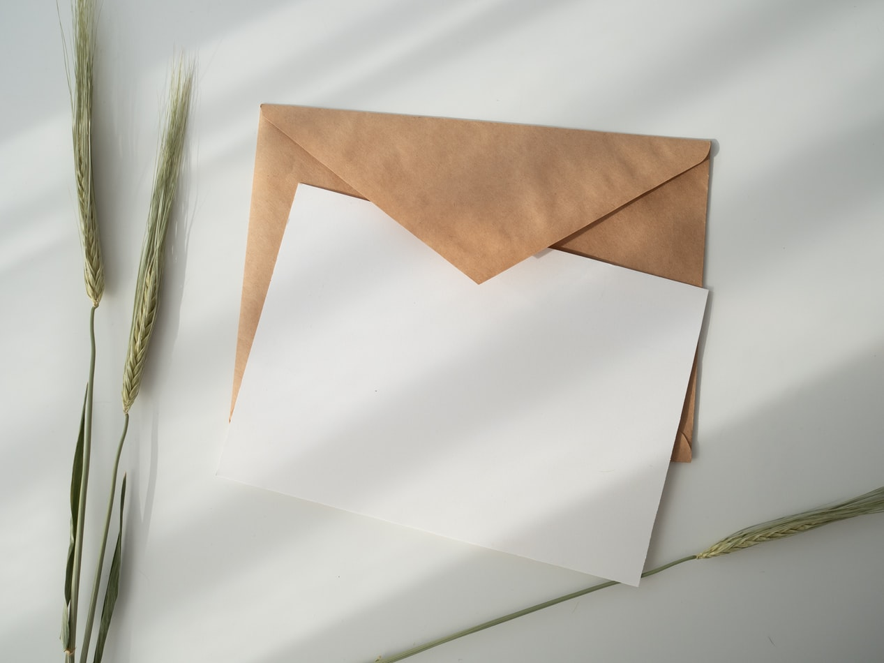

오후내내 비가 온다더니 슬쩍 내비치곤 구름만 가득한 날이다.
오늘같이 흐린 날씨에도 먼걸음을 훌쩍 달려온 너의 마음에서 따듯한 배려가 느껴진다. 그런 너에게 난 언제나 고마운 마음 뿐이다.
내가 먹고싶었던 샤브샤브를 함께 먹으며 만남은 맞춰가는 것이라고 말하며 맛있게 음식을 먹어주는 너는 사랑스러운 입을 가지고 있다.
함께 밥을 먹는다고 똑같은 생각을 가지는 건 아니겠지만 상대방이 좀 더 좋아하는 음식과 장소에 데려가고 싶은 마음만은 같지 않을까.
또 편지할게. 사랑하는 마음을 담아.
